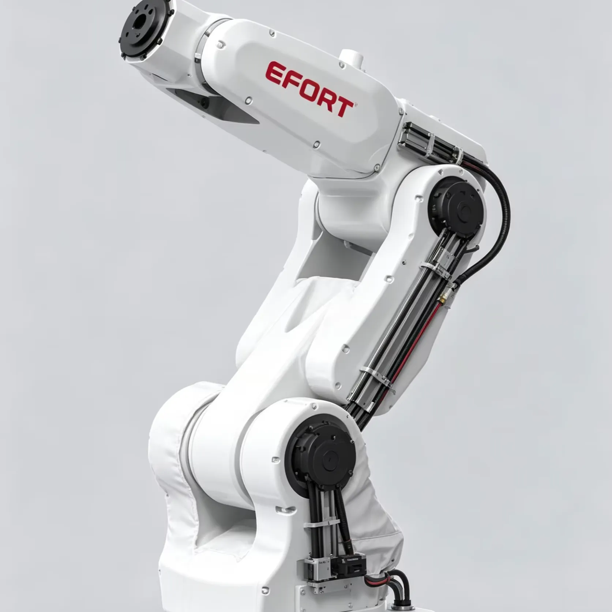

Database · Industrial Robots
EFORT
EFORT is a Wuhu-based industrial-robot maker (688165.SH) known for cost-competitive six-axis arms and painting robots.
Industrial Six-axis Listed Wuhu

Company Overview
- EFORT was incubated from Chery Automobile's manufacturing needs and grew into a major domestic industrial-robot maker.
- Its six-axis robots serve automotive, foundry, painting and general manufacturing at aggressive price points.
- EFORT is a core example of Chinese industrial robots displacing foreign brands on cost.
Key Facts
| Full Name | EFORT Intelligent Equipment Co., Ltd. |
|---|---|
| Chinese Name | 埃夫特智能装备股份有限公司 |
| Founded | 2007 |
| Headquarters | Wuhu, Anhui, China |
| Stock Code | 688165.SH (STAR Market) |
| Core Products | Six-axis industrial robots, painting robots |
| Status | Leading lower-cost industrial robot OEM |
Actuators & Sensors
- Self-developed controllers and drives.
- Six-axis arms across multiple payload classes.
- Painting and foundry-specific robot configurations.
Supply-Chain Analysis
- EFORT leverages Anhui manufacturing cost advantages.
- Reducers sourced from domestic suppliers (Leaderdrive, Double-Ring).
- Automotive lineage gives it real factory deployment experience.
Competitor Comparison
Versus ESTUN and SIASUN: EFORT competes on price and specific applications (painting, foundry), with a smaller but specialized portfolio.